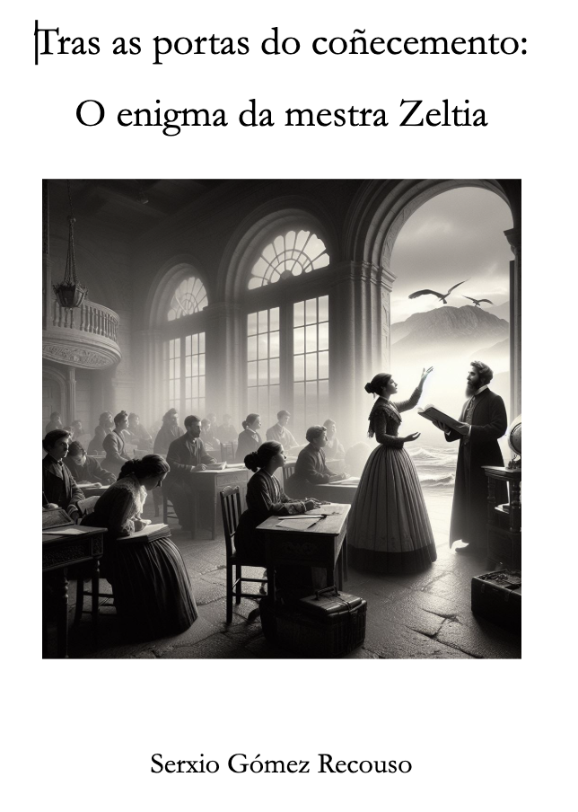

Para que el alumnado pueda inspirarse y empezar a construir una historia, podéis utilizar las dos técnicas creativas que vimos anteriormente: “Questions Burst”, aplicándola al tema que elijáis, o la técnica “Piensa en verde” dentro del apartado de píldoras creativas.
A continuación, os voy a mostrar otra forma original de comenzar a crear: partiendo de poemas.
En el año 2024 quisimos crear historias basadas en poemas de Luisa Villalba ( homenajeada en las letras gallegas) ya que esta fantástica escritora estudió en nuestro Instituto y de esta manera sorprender a sus familiares con un proyecto que nace de sus versos.

Para comenzar, lo primero que hice fue inventar una historia para mostrarles que, aunque el profesor no sea escritor, también se puede atrever a crear un cuento a raíz de un poema. El cuento está en gallego, ya que la asignatura se imparte en Galicia, y podéis descargarlo a continuación. Además, el formato de este cuento les sirve de guía, marcando la estructura que me gustaría que siguieran en sus propias historias, y nos proporciona un ejemplo de partida para inspirarnos.
Link al libro.
El proceso de creación de este libro es el siguiente:
- Leer un poema e interpretarlo.
- Extraer ideas de su lectura e interpretación.
- Responder una serie de preguntas: ¿Qué temas, elementos del poema o emociones me llaman la atención? ¿Qué preguntas me planteo en relación con el poema?
- Elegir un personaje principal para la historia.
- Investigar personajes históricos relacionados con mi ciudad y lugares específicos que pueda introducir para enriquecer mi historia.
En mi caso el ejemplo que les facilito es el siguiente
| Poema ¡Basta de llantos!, Arjona Delia |
Interpretación personal |
|
Mudas palabras nublan su mente,
guarda en secreto todas sus penas,
duele su angustia, tan interminable,
preso entre cadenas.
No halla la paz y todo es espera,
sangran sus labios, grita su herida,
siente en su espalda todo el tormento,
hecha pedazos toda su vida.
Quiero que escuches, hay esperanza,
se abren las puertas cuando te atreves,
vuelven las fuerzas que se perdieron
¡cumples tus sueños cuando te mueves!
¡Salta ya el muro! ¡Busca la llave!
¡Basta de llantos! Emprende huida.
Nunca te rindas, siempre habrá tiempo...
¡Vive y camina libre en la vida!
|
- El poema resalta la experiencia de una persona, una mujer, que sufre en silencio y soporta el dolor y la angustia del abuso psicológico y/o físico.
- Ella describe el sentimiento de estar prisionera de un tormento interno que no puede superar.
- A pesar del sufrimiento, el poema transmite un mensaje de esperanza y empoderamiento.
- Llama a la acción, instándote a saltar el muro y encontrar la clave de la superación personal y la libertad.
|
| ¿Qué preguntas me hago en relación al poema? |
- ¿Qué simbolizan el muro y la búsqueda de la llave en el contexto del poema?
- ¿Cómo cambia la perspectiva del personaje hacia el final del poema?
- ¿Cuál es el mensaje central que el poeta quiere transmitir?
|
| Ideas o anclas que se me ocurren para mi historia en relación con el poema |
- Personaje principal: Zeltia, una excelente profesora que en 1900 vive una doble vida en A Coruña. Cuando trabaja, lo disfruta enormemente, pero cuando tiene que volver a casa, sufre los horrores del infierno.
- Personaje secundario: Miguel el marido maltratador.
- Zeltia busca ayuda, la llave, para salir de su infierno personal.
- ¿Lo logrará?
- ¿Qué opción puede ser mejor para la historia, conseguirlo o no conseguirlo?
|